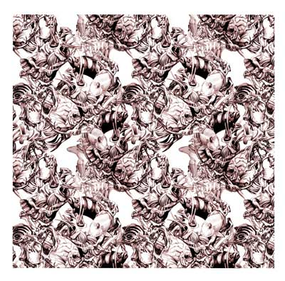

Polish immigrant Vlasic established a creamery in Detroit that was expanded by his son Joe so that in addition to selling milk and cheese, they also sold polish pickles. During WWII, he started selling pickles in jars. By 1974, the company dropped milk and cheese and focused exclusively on Vlasic pickles. In 1974, the introduction of the Vlasic stork piped the phrase "Vlasic is the best tasting pickle I ever heard!"
This pickle brand will be targeted towards the ever-growing hipster/hippie demographic. The label and packaging will be influenced by 1960’s graphics, skate decks, and contemporary street art. On the inside of the cap or potentially the inside of the label will be promotional opportunities to encourage consumers to support upcoming artists and musicians. Overall the packaging will be far more colorful and active in an attempt to attract younger consumers.
The brand will retain an ecological bent focusing on the homegrown and organic where the cucumbers will remain unadulterated by harmful GMO’s. Marketed to the public as the alternative, underdog brand against pickling monopolies like Vlasic and B&G. Unlike Vlasic, this is not America’s average pickle. The pickles will be available in a huge range of flavors from traditional dill to extremely spicy jalapeño for the risk takers.
The company will not be associated with a single name, and instead will be produced by an anonymous pickling collective similar to how street artist Banksy remains elusive and enigmatic. However in direct opposition to this anonymity, the farming practices and ingredients used will be easily accessible on their website.
-too tourist minded -"selling the surf...to visitors around the world" -Florida Casula is the "business suit" for Ron Jon Executive in Cocoa Beach -generational family tradition -numerous store expansions with 10 differen store locations including the Surf Grill, the Ron Jon Caribe Resort History of Ron Jon Surf Shop Ron Jon Surf Shop was orginally opened in Long Beach Island, New Jersey in 1961.
Ron Jon's exapnsion both in its range of products and in the store locations have shifted the focus from creating a quality surfboard to merely producing a large selection of cheap products with the principle goal of generating profit. The cohesiveness of the the clothing line is particularly disjointed. The only unifying elements is that all products are marked by the Ron Jon Logo. Although some clothing such as wetsuits, bathing suits, and proper footwear should be manufactured, a surf company should perhaps have less focus on dresses, skirts, blouses, purses, etc.
For my Nemesis assignment, I plan to brand a company that is in direct opposition to Ron Jon's Surf Shop. This new line of surfboards will focus primarily on craftsmanship and customer satisfaction. Operated our of Montauk, NY, out small, locally owned and operated business emphasized one-of-a-kind, handcrafted boards custom-made and painted by our talented group of artisans and craftsmen. These designs can be commissioned on an individual basis or the customer can select from a number of themes provided on our website. Our goal is to be more ecologically minded and less profit driven. In order to ensure the quality of its products, our businees is not only operated locally but also makes use of local materials. Our company offer the most cutting edge in surfboard manufacturing utilizing composite technology (foam and fiberglass) that will be ecologically friendly. These surfboards will be able to be customized on an individual basis using 100% recycled EPS foam cores finished with epoxy resins allowing for exquisite control. Additionally more traditional boards, each individually handmade, will be made from a variety of woods.
We value our customers and encourage theme to post their feedback and recommendatiosn on our blog in addition to videos and photographs documenting their experiences using our products.
Pictured below: repeating ocean pattern by local artisan J. Bastidas and handcrafted bamboo recylable surfboard complete with woodburned design

This company was founded by writer/illustrator Jessica Bastidas. Locally run from Baltimore, MD, our publishing house focuses on establishing an international platform for aspiring writer/illustrators from across the globe. Books center thematically on language acquisition and cultural immersion. Writers continue to analyze controversial topics including immigration, cultural alientaion, and socio-economic inequities.